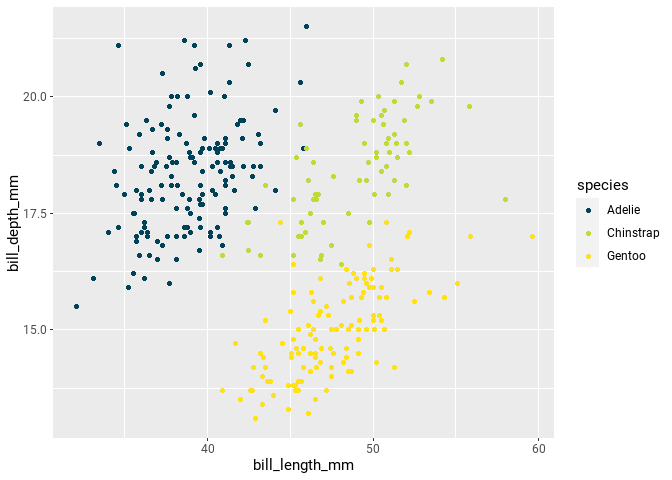
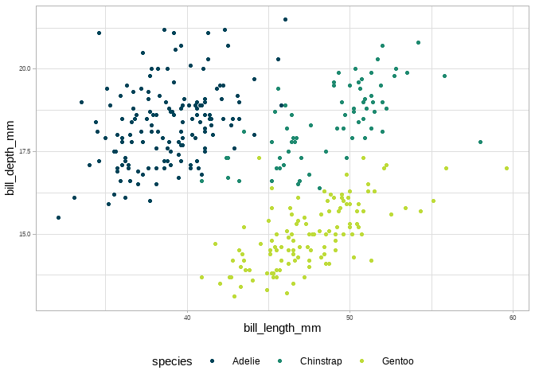

My personal R library
The goal of benelib is to make my life considerably easier. This package includes various helper functions for ggplot2 plots, RStudio projects or R Markdown templates and a few things more.
Installation
You can install and loaded the released version of benelib from GitHub with:
Examples
ggplot2 Colors and Fills
One of the main reasons for this package to exist is the abilty to change ggplot2’s default color and fill scales to a given corporate design.
library(ggplot2)
set_personal_theme()
palmer_penguins %>%
ggplot(aes(bill_length_mm, bill_depth_mm, color = species)) +
geom_point()
Plot themes
Another nice addition is my personal ggplot2 theme.
palmer_penguins %>%
ggplot(aes(bill_length_mm, bill_depth_mm, color = species)) +
geom_point() +
theme_bene()